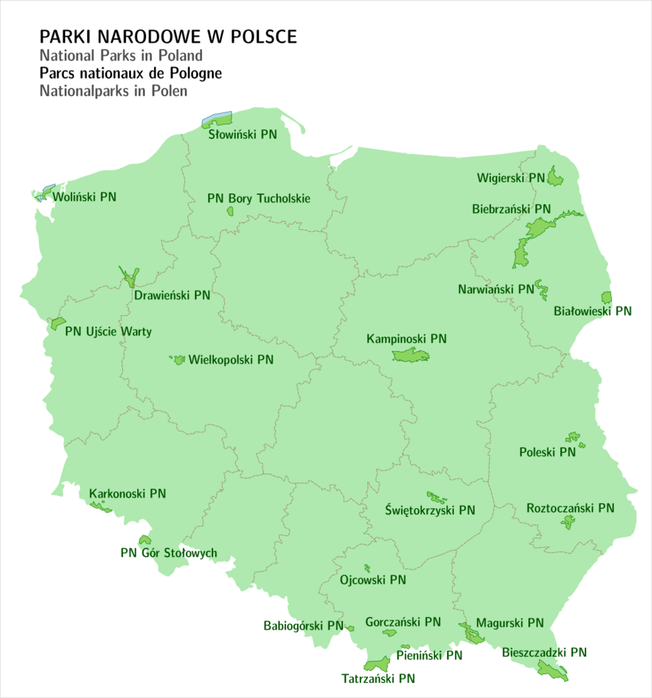

Podstawa prawna
Park narodowy – jedna z form ochrony przyrody w Polsce. Zgodnie z ustawą o ochronie przyrody z 2004 obejmuje obszar wyróżniający się szczególnymi wartościami przyrodniczymi, naukowymi, społecznymi, kulturowymi i edukacyjnymi, o powierzchni nie mniejszej niż 1000 ha, na którym ochronie podlega cała przyroda oraz walory krajobrazowe. Park narodowy tworzy się w celu zachowania różnorodności biologicznej, zasobów, tworów i składników przyrody nieożywionej i walorów krajobrazowych, przywrócenia właściwego stanu zasobów i składników przyrody oraz odtworzenia zniekształconych siedlisk przyrodniczych, siedlisk roślin, siedlisk zwierząt lub siedlisk grzybów. W Polsce wyodrębniono 23 parki narodowe.
Lista parków narodowych
Sed ut perspiciatis unde omnis iste natus error sit voluptatem accusantium doloremque laudantium, totam rem aperiam.

Kolumna 3
Nemo enim ipsam voluptatem quia voluptas sit aspernatur aut odit aut fugit, sed quia consequuntur magni dolores eos.